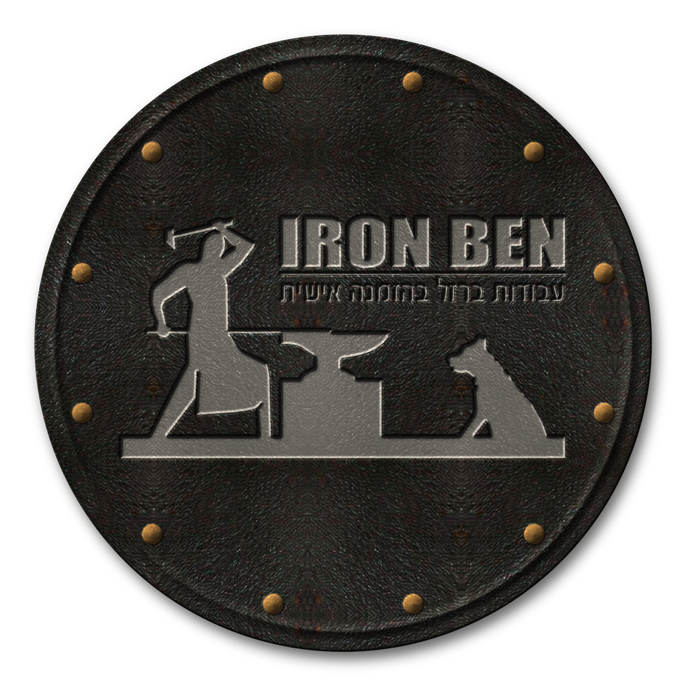
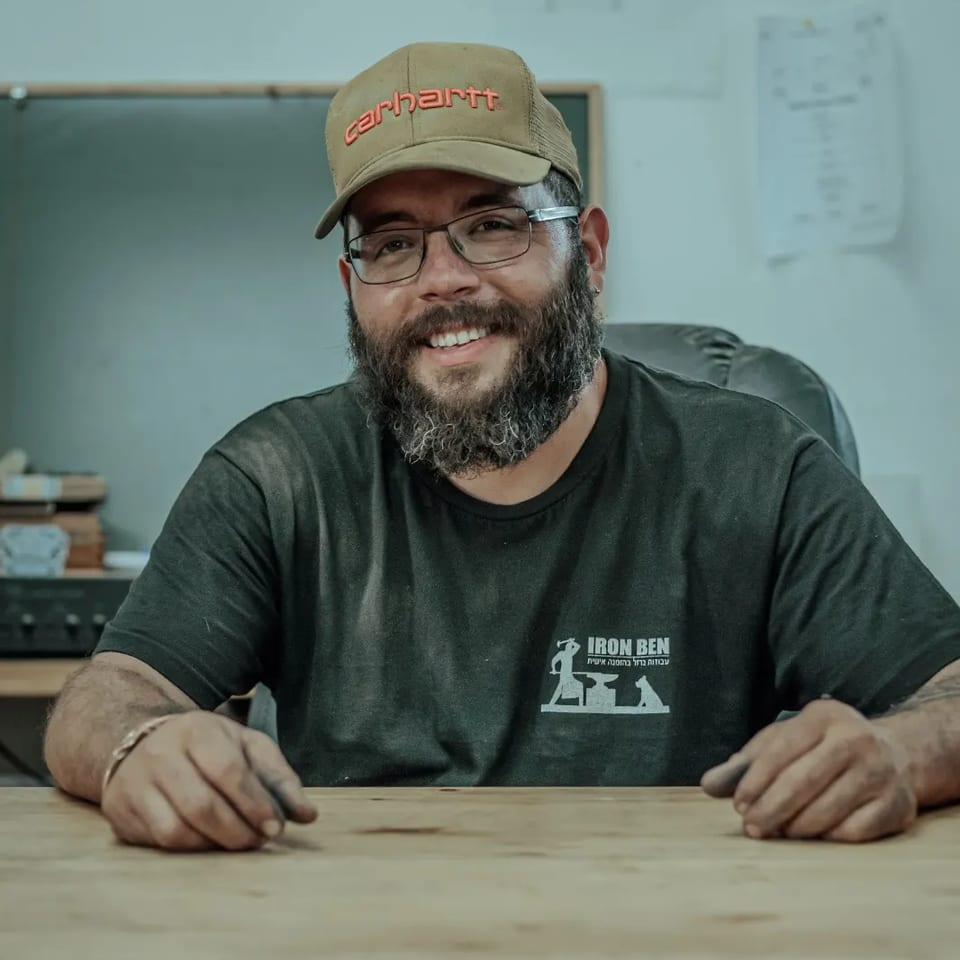

בית עובד · ליד נס ציונה
ברזל. עץ.אם אתם יכולים לדמיין את זה,
אנחנו יכולים לבנות את זה.
סדנה בוטיקית של ברזל ועץ. מתכננים איתכם, מייצרים כאן, ומתקינים אצלכם.


בתוך ארון העבודות.פתחו מגירה, ולחצו על תמונה להגדלה.
שולחן העבודה.
הצעה ראשונית חינם, לפי המידות שלכם.
בוחרים מה בונים ומזינים מידות בערך. את המדידה המדויקת עושים אצלכם בבית, או שאתם מודדים ושולחים. מדרגות, פרגולות ומטבחי חוץ מתכננים איתכם אישית: דברו איתנו.

בן. הלב מברזל.
בן התחיל לעבוד עם ברזל בגיל 13. מאז הוא לא עזב את הסדן, אבל הוא לא "סתם רתך": בן מעצב בברזל. כל עבודה שיוצאת מהסדנה היא יצירה, לא מוצר מהמדף.
הכל מתחיל בהקשבה. בן שואל, שומע ומבין: מי גר בבית, מה יעמוד ליד מה, איך האור נכנס בבוקר ומה באמת חשוב לכם. רק אז הוא משרטט, ומתאים את העבודה בדיוק לצרכים שלכם, ולא למה שנוח לייצר.
הוא לא ממהר. כל ריתוך נבדק, כל קצה מוחלק ביד, ושום דבר לא יוצא מהסדנה אם הוא לא היה שם אותו בבית שלו.
ברזל הוא חומר קשה. הלב שמאחוריו, לא.
בן, IRON BEN
הדלת לחצר.
בואו לראות את הסדנה, להרגיש את העץ ביד ולדבר על הפרויקט.
היצירתיות אצלנו בלי גבול: אנחנו הופכים חלומות ודמיון למציאות. אנחנו מתמחים במדרגות, שערים, מעקות, פרגולות ורהיטים, אבל אנחנו יכולים לבנות כמעט הכל. אם אתם יכולים לדמיין את זה, אנחנו יכולים לבנות את זה.
- כתובת
- שעות
- א' עד ה' 8:00 עד 17:00, ו' עד 13:00
- דברו איתנו
תכנון אדריכלי או תכנון מיוחד מבוצע על ידי המעצבים ואנשי המקצוע שלנו בשטח.
IRON BEN · ברזל ועץ בהזמנה אישית · הצהרת נגישות